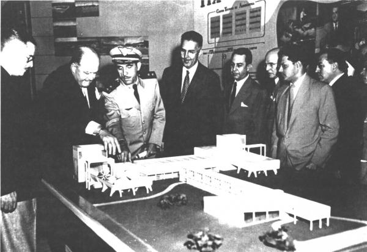
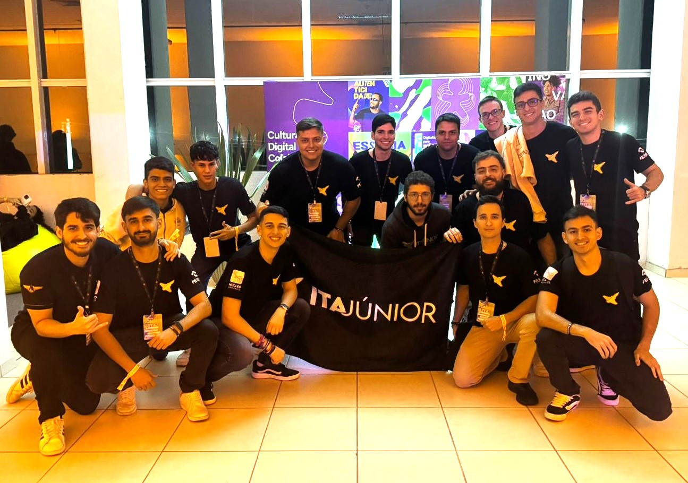

Cursos
Inscritos em 2025
Alunos na graduação
O Instituto Tecnológico de Aeronáutica (ITA) representa uma instituição de ensino superior pública, reconhecida nacionalmente pela excelência em formação na área da engenharia, especialmente voltada para o setor aeroespacial. Localizado na cidade de São José dos Campos, São Paulo, o ITA está vinculado ao Departamento de Ciência e Tecnologia Aeroespacial (DCTA) da Força Aérea Brasileira, integrando-se assim às estruturas de defesa e pesquisa do país. A instituição oferece uma variedade de cursos de graduação e pós-graduação, destacando-se por seu alto padrão de ensino e pesquisa. Além de uma sólida formação acadêmica, o ITA proporciona aos seus alunos recursos como moradia de baixo custo e refeições gratuitas, facilitando assim o acesso e a permanência dos estudantes. Devido à sua contribuição significativa na formação de profissionais altamente qualificados, o ITA é frequentemente listado entre as melhores instituições de ensino superior do Brasil.

Desde a sua fundação, o ITA tem como missão formar líderes e inovadores no campo da engenharia. Através de uma abordagem multidisciplinar, a instituição busca não apenas transmitir conhecimentos técnicos, mas também desenvolver habilidades como liderança, gestão e inovação nos seus alunos, formando engenheiros de elite capazes de transformar a tecnologia brasileira com ética, liderança e visão estratégica.

Nossas iniciativas são o laboratório vivo onde o conhecimento de engenharia encontra a gestão, a inovação e o compromisso social. Elas estão organizadas em pilares que movem o futuro. Seja você um estudante em busca de desafio, uma empresa procurando os melhores talentos ou um entusiasta da ciência, as iniciativas do ITA são a porta de entrada para o que há de mais avançado no país.
No ITA, a engenharia encontra o seu propósito mais elevado: a defesa da nossa nação. Mais do que formar profissionais de elite, o Instituto é o berço de oficiais-engenheiros que dedicam sua inteligência e liderança à Força Aérea Brasileira (FAB) e à garantia da soberania nacional. A carreira militar no ITA não é apenas uma escolha profissional; é um compromisso com o futuro estratégico do Brasil.